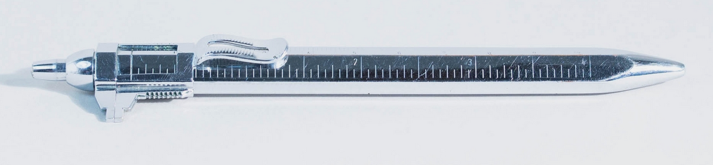

Fend Typokrat
Quer durch die Welt
Stand: 05.05.2026
Dies ist ein Unterartikel. Hier geht es zum Hauptartikel über Fend.

Der Fend Typokrat war ein Mehrfunktionen-Kugelschreiber, der ab 1958 von der Firma Gebrüder Fend aus Pforzheim verkauft wurde.Primär wurden die Funktion Kugelschreiber und Schiebelehre zusammengefasst.
Insgesamt bat der Typokrat aber 12 Funktionen, wie es in 'Die Westdeutsche Wirtschaft und ihre führenden Männer' (1958) heißt.
(Eine vollständige Liste der Funktionen konnte noch nicht aufgestellt oder gefunden werden.)
Der Ursprung der ungewöhnlichen, vierseitigen flachen Stiftform liegt in den USA.
Dort wurde von Martin E. Trollen 1935 für Brown & Bigelow das Aussehen eingetragen.
In Deutschland stellte die bekannte Firma Sarastro aus Pforzheim die Stifte unter Lizenz für den deutschen Markt her.
Bereits zu den Olympischen Spielen 1936 ist ein solcher Stift von Sarastro belegt.
Auf ihnen fand man den Namen Sarastros, die Bezeichnung des Stifts als "Unitas" und die Markierung als deutsches Reichsgebrauchsmuster. Dieses habe ich nicht finden können.
Desweiteren entwarf Sarastro 1937 einen Mehrfarbstift, der auf Trollens Stiftentwurf basierte.
In diesem Dokument wird auch der Nutzen von Trollens Erfindung als Brieföffner angemerkt.
In Japan war Morita Metal der Hersteller des als Kanoe Peace bekannten identischen Drehbleistifts.
(Wie im Hauptartikel erwähnt bestand die Kanoe-Peace-Reihe sowohl aus Mehrfarb- als auch Einfarbstiften.)
Aufgrund des Namens liegt es nahe, dass es nie zu einer Lizensierung kam, und man lediglich den nur für 3.5 Jahre angelegten Schutz abwartete. "Peace" bezog sich dann auf den Frieden nach dem 2. Weltkrieg.
1958 entschloss sich dann Fend für die Adaption von Trollens Stiftentwurf als "Typokrat".
Morita Metal erweiterte 1961 das ursprüngliche Modell ebenfalls, allerdings nur um eine Skala, und der Stiftmechanismus blieb in diesem Fall gleich.
Anfang der 1960er Jahre änderte Fend den Typokrat etwas ab und bewarb ihn unter ihrer Truxa-Reihe als Truxa Nr.111.
Was wohl dieses wiedergekehrte Interesse Ende der 50er Jahre losgetreten hatte?
Ob Fend letztendlich selbst auf die Idee des Typokrats/Truxa111 kam, ist fraglich.
Es findet sich, möglicherweise aus englischem Ursprung, eine solche Schiebelehre-Kombination mit gleichem Stiftkörper mit herkömmlichem Drehvorschub, welcher für gewöhnlich deutlich früher als 1958 anzufinden ist. Der Klipp dieser unmarkierten möglichen Inspiration wiederum weicht von Trollens Klipp ab und ist gewöhnlich genietet.
Im Jahr 2000 wurde das erste und einzige Patent der Firma Carl-Jürgen Fend angemeldet. Es betraf eine Fortsetzung des Typokrat bzw. Truxa Nr.111.
Es wurden neben den zwei Grundfunktionen noch eine Tabelle, ein Profilmesser und ein Spannungsprüfer konzeptioniert. Letzterer schaffte es aber nicht ins realisierte Produkt.
Heute verkauft Cleo Skribent diesen sogenannten Messograf.
Wohlmöglich war der angedachte Name für den Messograf 'Messo-FAS', da diese 2002 die letzte angemeldete Marke der Firma war.